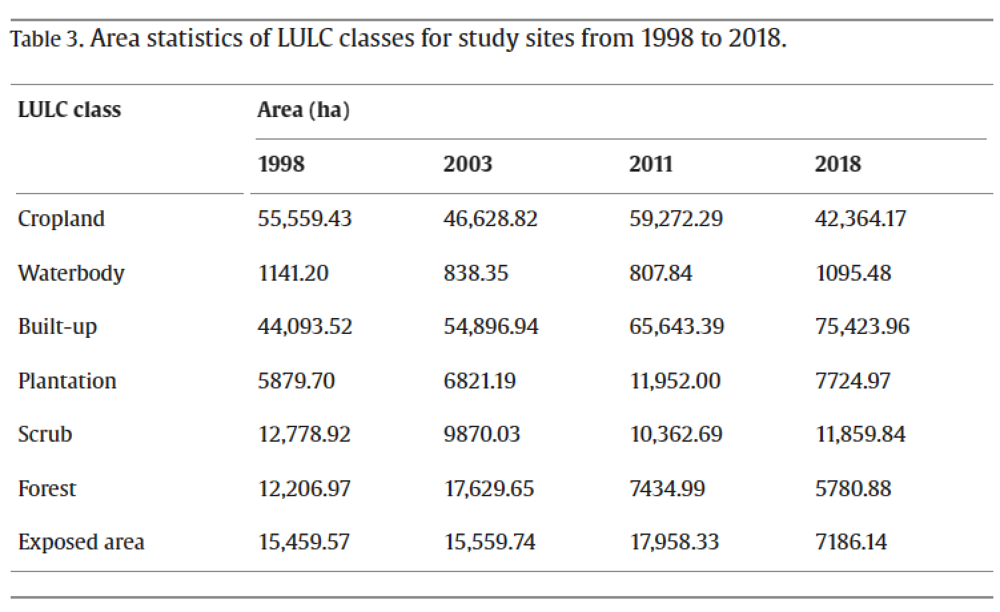
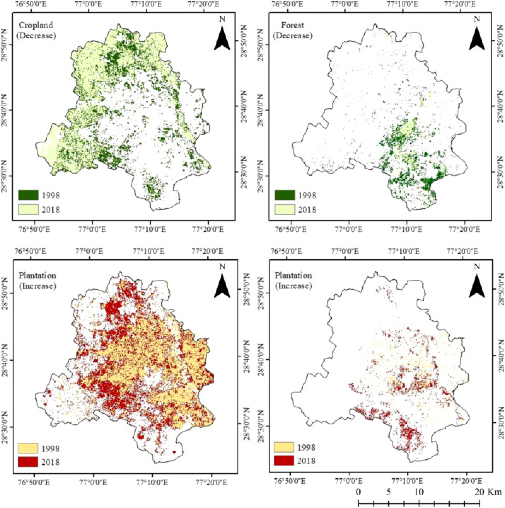
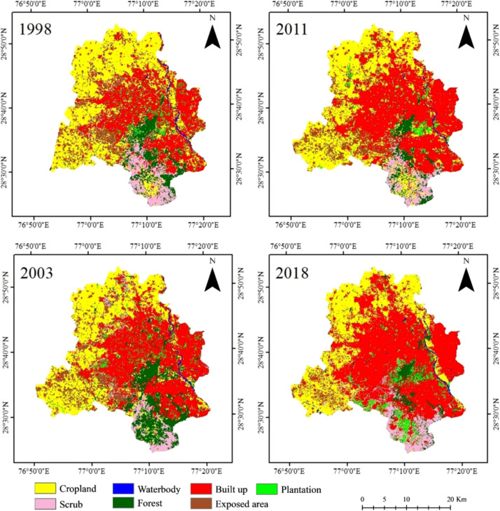

Terms & Conditions
Privacy Policy
Copyright 2023


Follow Us
Contact Us
+91 920000xxxx
help@naturedecadeshift.com

Nature
DecadeShift
Home
Contact Us
Nature
DecadeShift
Results
4.1. Spatio-temporal LULC changes analysis
Two decades-long LULC change (LULCC) statistics and trends for Delhi are shown in Table 3. The net gain of urban area is related to the net loss in the area of almost every class with major loss of cropland followed by exposed area and forest respectively. Plantation class experienced net gain with huge variations in area coverage. The waterbody area faced some fluctuations among the reference years.
The increase in urban population requires infrastructural support such
as roads, houses, institutions, etc., which drive massive LULC
transformations. LULC maps for the years 1998, 2001, 2011, and 2018 show
(Fig. 3, Fig. S2) that over the past two decades, the built-up land use
in Delhi has increased by 71% at an annual growth rate of 1566.52 ha.
The rural area of the south-west and north-west part of Delhi that
encompassed with agricultural fields had undergone the highest loss
(13,195 ha) among all the classes during the process of urban expansion.
In the earlier years, central and eastern Delhi were rich in planted
sites. During the period of city growth, south and south-western parts
took the lead through increasing plantation class by 10 ha. The scrub
and forest classes are dominant in the southern part of the city while
the eastern Delhi, having the highest population density, is with least
forest cover. The sprawl has particularly impacted the forest of
southern Delhi through fragmentation with an average annual loss of
322 ha. In addition, built-up within the city has intensified with
plantations and exposed area being gradually transforming to built-up.

Changes in ES categories and impacts of LULC changes
Categorical percentage (%) contribution of each service category type
in the study period. Individual category (%) contribution shown as
numbers next to the bars.

